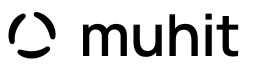

Yan yana.
Üç yumuşak form birbirini kapatmadan bir araya gelir. Her biri bütüne katılırken kendi alanını korur.
Muhit’in işareti ortak yaşam fikrinden doğuyor. Üç akışkan yay, ortak bir boşluğun çevresinde buluşuyor. Hafifçe dolgunlaşan gövdeler, incelen uçlar ve doğal bir ritim.

TEK RENK / AYNI FORMÜç yumuşak form birbirini kapatmadan bir araya gelir. Her biri bütüne katılırken kendi alanını korur.
Formların içindeki ve aralarındaki boşluk, farklı insanların ve fikirlerin kendine yer bulabileceği alan.
Kesintisiz bir çember yerine açık bir çevre. Doğanın döngüsünü ve yeni katılımlara yer açmayı anlatır.
SVG dosyaları şeffaftır. Yazı harfleri vektör yollara dönüştürülmüştür; açmak için font kurulumu gerekmez. En küçük kullanım: sembol 24 px, tam logo 110 px. Oranları ve sembol–yazı ilişkisini koru.